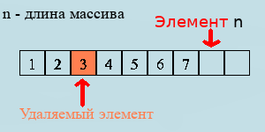
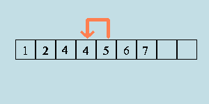
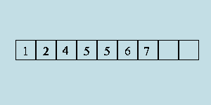
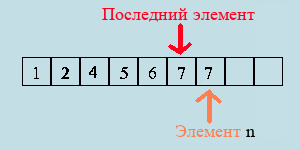

Удаление элемента из массива
Итак, вам понадобилось удалить один элемент из массива. Этот алгоритм можно реализовать несколькими способами, которые мы разберём ниже.
Без сохранения порядка
Характеристика реализации:
- Проста в написании;
- Быстра;
- Нарушает порядок элементов в массиве;
Реализация заключается в следующем: надо взять элемент, обменять его значениями с последним элементом массива и уменьшить длину последнего на единицу.
Если вы не знаете, как обменять значениями две переменные, рекомендую посмотреть соответствующую статью:
Обмен двух переменных значениямиНа всякий случай — иллюстрации:
Как вы видите, алгоритм совершенно несложен. Давайте теперь его запишем на языках программирования, используя статический (динамические в средней школе не проходят) массив arr и переменную его длины n — удалим элемент с индексом to_delete:
C++
//Меняем значениями удаляемый и последний
//элементы массива:
int temp = arr[to_delete];
arr[to_delete] = arr[n - 1];
arr[n - 1] = temp;
//Удаляем последний элемент:
n -= 1;
Pascal
//Меняем значениями удаляемый и последний
//элементы массива:
temp := arr[to_delete];
arr[to_delete] := arr[n - 1];
arr[n - 1] := temp;
//Удаляем последний элемент:
n := n - 1;
С сохранением порядка
Характеристика реализации:
- Немного сложнее для понимания;
- Дольше работает (в олимпиаде может быть важным);
- Сохраняет порядок элементов в массиве;
Эта реализация заключается в том, что часть массива после удаляемого элемента последовательно "сползает" на один элемент, перекрывая удаляемый элемент. Тут без иллюстраций обойтись не получится:
 Для полного счастья осталось только уменьшить длину массива на один:
Как вы можете видеть, остальные элементы сохранили свой порядок. Теперь реализация. Мы используем статический (динамические в средней школе не проходят) массив arr и переменную его длины n — удалим элемент с индексом to_delete:
C++
//"Стягиваем" все элементы массива на индекс назад
//Обратите внимание: так как нам необходимо обращаться к следующему за
//i-ным элементу, то i + 1 должно быть допустимым.
for (int i = to_delete; i + 1 < n; ++i)
arr[i] = arr[i + 1];
//Уменьшаем размер массива на единицу.
n -= 1;
Pascal
{"Стягиваем" все элементы массива на индекс назад}
{Обратите внимание: так как нам необходимо обращаться к следующему за}
{i-ным элементу, то i + 1 должно быть допустимым.}
{i <= n - 2 равносильно i + 1 <= n - 1, то есть, это гарантия, что}
{не будет совершено обращение к элементу, находящемуся вне массива.}
for i := to_delete to n - 2 do
arr[i] := arr[i + 1];
n := n - 1;
{Уменьшаем размер массива на единицу.}
Встроенными средствами языка
Внимательный читатель, вероятно, уже задался вопросом, где же примеры на языке Python? Дело в том, что в Python'е внутри языка реализован очень большой набор функций, среди которых есть и удаление элемента из массива.
Мы используем массив arr — удалим элемент с индексом to_delete:
Python
arr.pop(to_delete)Вот, в принципе, и всё. Удаление элемента из массива — задача несложная, но уметь её выполнять должен каждый, кто изучает программирование. Спасибо, что читаете нас!
Массивы ©Все права защищены